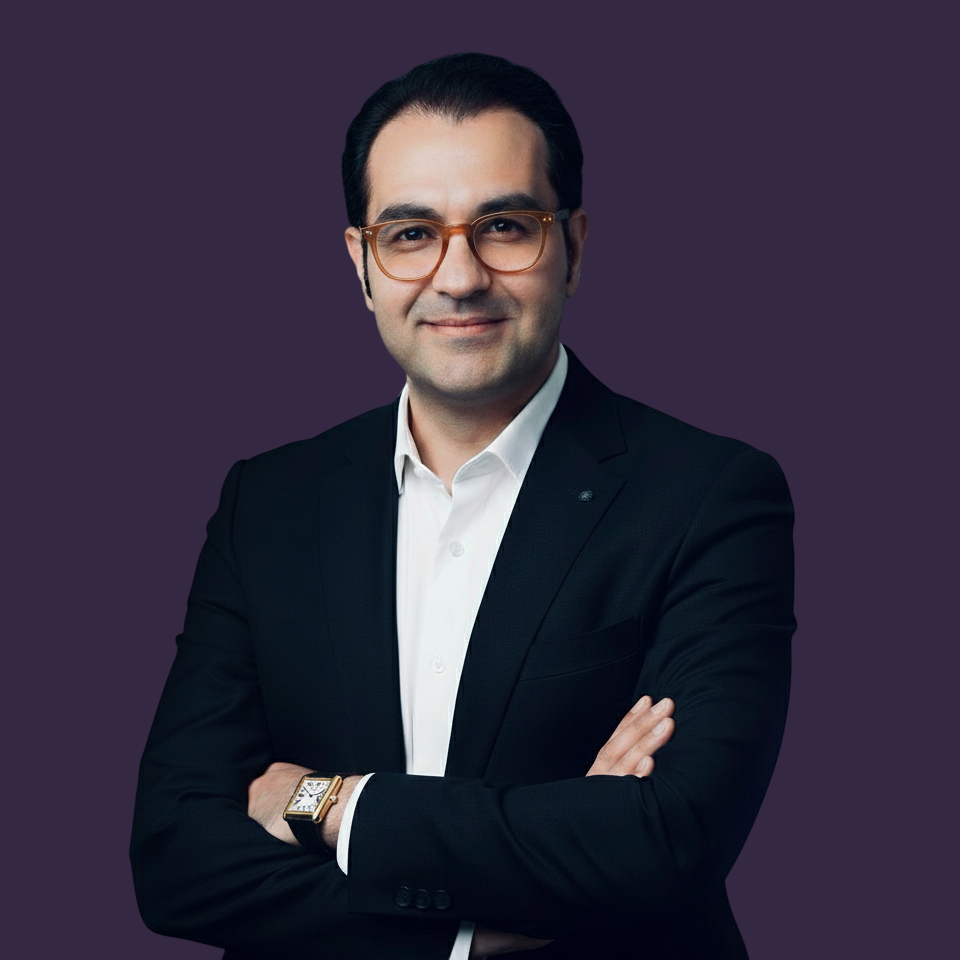

About
Postdoctoral Associate, Department of Population Medicine & Diagnostic Sciences, Cornell University, Ithaca, NY, US
PhD, Department of Chemical Engineering, Columbia University, New York, NY, US

Translational and computational oncology researcher with 15+ years of quantitative and computational experience spanning algorithmic modeling, optimization, engineering computation, and data-intensive research — including 6+ years of independent research in cancer genomics, bioinformatics, systems biology, and precision oncology.
I integrate experimental molecular biology with computational genomics, with hands-on experience in DNA/RNA extraction, PCR/qPCR, reverse transcription, flow cytometry, and whole-genome/whole-exome sequencing preparation. My research expertise spans WGS/WES, bulk and spatial transcriptomics, RNA-seq/miRNA-seq, cfDNA genomics, somatic variant and CNV analysis, multi-omics integration, and regulatory-network reconstruction using Python/R and HPC workflows. I lead end-to-end biomarker and therapeutic target discovery using machine learning, deep learning, survival modeling, molecular docking, optimization algorithms, and robust cross-validated inference.
My current research focuses on comparative and precision oncology, including liquid-biopsy genomics, tumor heterogeneity, cross-species molecular conservation, spatially resolved transcriptomic profiling, miRNA biomarker prioritization, and molecular biomarker discovery in canine and feline lymphoma with translational relevance to human cancer.
Professional Memberships
Language Proficiency
Article (DOI: 10.1093/ce/zkad085) selected as Editor's Choice.
Full scholarship for PhD study and research at the School of Engineering.
Full scholarship (€180k) for research at the Technical University of Munich (TUM).
Ranked among the top 1% of more than 3,100 participants.